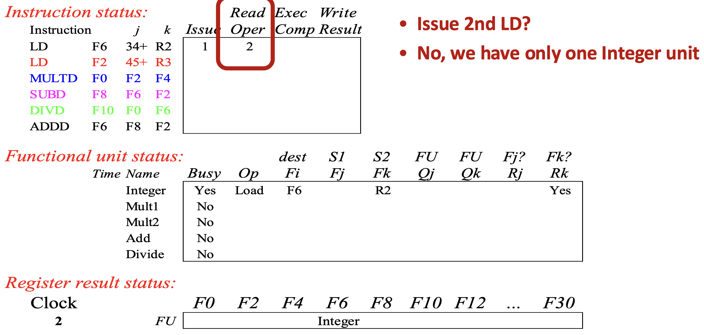

서울대학교 컴퓨터공학부 유승주 교수님의 "고급 컴퓨터 구조" 강의를 필기한 내용입니다.
ILP
- CPU 는 입력으로 들어온 instruction stream 으로부터 parallelism 을 찾아 그것을 exploit 하는 기술이 구현되어 있고, 이러한 것을 ILP 라고 한다.
- 다른 parallelism 와 마찬가지로, ILP 도 resource conflict (내가 사용하고자 하는 자원을 지금 사용할 수 있는가?) 와 Dependence 에 영향을 받는다.
Dependence 복습
- Data dependence (True dependence): Read after write (RAW) 인 경우.
- Anti dependence: Write after read (WAR) 인 경우
- Output dependence: Write after write (WAW) 인 경우
- Dependence 없으면 당연히 parallel 하게 실행하거나 순서를 바꿀 수 있고, 추가적인 register 를 이용하여 dependence 를 끊는 식으로 parallel execution 이 가능하게 할 수도 있다.
Dynamic Scheduling
- 일단 stall 이라는 것은 아무 일도 하지 않는 CPU cycle 을 말하는 것이다.
- 그리고 Dynamic Scheduling 이라는 것은 (1) instruction 의 실행 순서를 조정해 stall 이 최소한으로 발생하도록 하되, (2) dependence 는 지킴으로써 execution correctness 는 보장하는 것이다.
- 이것을 CPU 에 구현하는 것은
- 일단 compiler 에게 abstraction 을 제공해줄 수 있다는 장점이 있다: compiler 는 CPU 가 어떻게 instruction 을 execution 하는지 신경쓰지 않아도 된다.
- 다만, CPU 의 구현 복잡도는 그에 따라 증가한다.
Scoreboard Architecture
- Scoreboard Architecture 는 이 dynamic scheduling 을 제공하는 고전적인 architecture 이다.
- 1964년에 나왔으니까 거의 60년이 넘었다.
CPU Cycles
- 기존의 MIPS 에서는 5-stage cycle 을 사용했지만, Scoreboard 에서는 다음의 네 stage 를 사용한다.
- Issue (ID1):
- 여기서는 instruction decode 를 하고
- Structure hazard (resource availability) checking 을 수행한다.
- Decode 를 한 다음에 그것에 필요한 ALU 가 지금 사용할 수 있는지 검사하고,
- 다른 누군가가 사용중이면 issue 를 하지 않고 대기 (stall) 한다.
- 이때, output register 도 resource 로 간주한다: 즉, WAW dependence 가 있을 때에도 issue 를 하지 않고 stall 한다.
- Read operands (ID2)
- 여기서는 피연산자 (register) 를 읽는다.
- 이때, 이 값이 준비가 되었는지를 확인하여 읽을 수 있는지 없는지 검사한다.
- 즉, “읽을 수 있는지 없는지 검사” 한다는 것은 RAW dependence 를 검사한다는 뜻이다.
- 이전에
- Execute (EX): 뭐 여기서는 명령어를 실행하고 Scoreboard 를 업데이트한다.
- Scoreboard 가 뭔지는 아래에서 구체적으로 나온다.
- Write result (WB)
- 연산 완료 후, 값을 쓰는 것인데
- 이때도 마찬가지로 쓰고자 하는 자리가 사용중인지 검사한다.
- 만약에 해당 자리의 값을 누군가가 읽고있으면, 쓸 수 없고 이때도 stall 이 발생한다.
- 즉, 이 말은 WAR dependence 를 검사한다는 말과 같다.
Scoreboard Components
- Scoreboard 는 약간 현재 상태를 나타내는 metadata 같은 건데 다음과 같이 구성되어 있다.
- Instruction status: 각 instruction 에 대해, 위의 4가지 CPU cycle 중 어느 stage 에 있는지
- Functional unit status: 각 functional unit 에 대한 상태값들. 다음의 9개의 field 가 있다:
- Busy: 이 functional unit 이 지금 사용중인지
- Op: 이 functional unit 이 어떤 작업을 하는 중인지
- 가령 adder 라면, 덧셈인지 뺄셈인지 등
- : Output register 를 나타내는 field
- , : Input register 들을 나타내는 field
- Instruction 은 보통 피연산자가 두개니까 이 두개만 사용하는듯
- , : Input register 를 Output register 로 하는 (다른) functional unit 번호
- 즉, functional unit 가 output register () 로 1번 register 를 사용하고 있다면, 1번 register 를 input register () 로 하는 다른 functional unit 는 field 에 1이 들어가게 되는 것.
- , : 와 각각에 대해 준비되었는지와 읽었는지를 나타내는 flag.
- 여기서 좀 헷갈릴 수 있는데
YES는 준비되었지만 읽지 않았을 때를 의미하고NO는 준비되지 않았거나 이미 읽었을 때를 의미한다.
- Register result status: 어떤 functional unit 이 어떤 register 에 값을 쓸 것인지에 대한 정보.
- 즉, functional unit 에게 output register 가 할당된 mapping 이라고 생각하면 된다.
Scoreboard Example
LD(Load decimal) 두번,MULTD(Multiply decimal),SUBD(Substract decimal),DIVD(Divide decimal),ADDD(Add decimal) 을 수행하는 위의 코드를 어떻게 처리하는지 보자.
Cycle 1
- Instruction status: 일단 LD instruction 이 cycle 1 에 issue 된다.
- Functional unit status: 이 instruction 을 담당하는 functional unit 이 “Integer” 라고 할 때, 이놈에 대한 상태가 update 된다.
- Busy: 사용중이니까 당연히
YES가 된다. - Op: Load 를 처리중이니까 당연히
LD가 된다. - : 할당된 output register 는 보다시피
F6이다. - , : 첫번째 피연산자는 상수 (+34) 이기 때문에 에 input register
R2가 할당된다. - , : Input register 들을 사용하고 있는 다른 functional unit 이 없기 때문에 빈칸으로 남는다.
- , : (
R2) 가 (아무도R2를 사용하고 있지 않기 때문에) 준비되었지만 아직 읽지는 않았기 때문에YES
- Busy: 사용중이니까 당연히
- Register result status: 지금 integer functional unit 이 output register 로
F6을 이용하고 있기 때문에 해당 result status 가 integer 로 바뀐다.
Cycle 2

- 두번째
LD를 issue 했으면 좋았겠지만 하나밖에 없는 integer functional unit 이 busy 이기 때문에 issue 되지 않고 첫번째LD가 read operand stage 로 진입한다.- 즉, 위에서 issue stage 에서 Structural hazard 를 검사한다고 했는데, 이것에 걸려서 issue 되지 않은 것.
Cycle 3

MULTD를 issue 했으면 좋았겠지만 아직 두번째LD가 issue 되지 않았으므로 이놈도 issue 되지 않는다.- 그리고, 첫번째
LD가 read operand stage 를 지났기 때문에 input register (R2) 를 읽었고, 따라서 가NO로 바뀐다.
- 그리고, 첫번째
Cycle 4
- 첫번째
LD가 WB 를 하며 integer functional unit 이 free 된다.
Cycle 5
- 이제 두번째
LD가 issue 된다.- 보면 cycle 1 일 때와 별반 차이는 없다.
- 그냥 가 output register 인
F2로 설정되고, 는 input register 인R3, 그리고 이놈이 준비는 됐지만 아직 읽지는 않았기 때문에 는YES로 설정된다.
Cycle 6
- (1) 두번째
LD가 issue 되었고 (2) Mult1 functional unit 이 가용상태이기 때문에 이제MULTD가 issue 된다.- 즉, 이때는 Mult1 이 가용상태여서 Structural hazard 에도 안걸리고, WAW dependence 도 없기 때문에 issue 가 가능한 것.
- 그리고 두번째
LD가 read operand stage 에 진입한다. - 여기서 눈여겨 볼 것은
MULTDissue 에 의해 바뀐 Mult1 의 functional unit status 이다.- 일단
MULTD의 input register () 인F2는 두번째LD의 output register 이다. - 이에 따라 가 integer 로 설정되고, 이 값이 아직 준비되지 않았기 때문에 가
NO로 설정된다. - 이것을 판단할 때는 아래의 register result status 를 보면 된다:
- Mult1 의 인
F2에 대해 register result status 를 보면, integer functional unit 에서 사용중인 것을 알 수 있고, 따라서 RAW dependence 이기 때문에 와 가 설정되게 되는 것이다.
- Mult1 의 인
- 일단
- 그리고
F0가 output register 로 설정됐기 때문에 register result status 도F0에 Mult1 가 설정된다.
Cycle 7
- 일단 두번째
LD는 exec stage 가 되고 MULTD는 read operand stage 로 가지 못한다.- 이것은 위에서 말한 대로 read operand stage 에서는 RAW dependence 를 검사하는데, 보다시피 두번째
LD가 아직 종료되지 않아F2(즉,LD의 ) 가 ready 상태가 아니기 때문에 (즉,LD의 가NO이기 때문에) RAW 에 걸려 진행할 수 없는 것.
- 이것은 위에서 말한 대로 read operand stage 에서는 RAW dependence 를 검사하는데, 보다시피 두번째
- 마지막으로
SUBD가 issue 된다.- 왜냐면
SUBD에 필요한 Add functional unit 이 가용상태이고 (즉, Structural hazard 가 아니고) output register 인F8에 대해 다른 instruction 이 write 를 하지 않기 (즉, WAW dependence 가 아니기) 때문이다. - 이놈에 대한 functional unit status 를 보면 위에서 본 내용이랑 동일하다:
- 인
F2가 두번째LD의 output 이기 때문에 에는 integer, 는 NO 가 되는 것.
- 인
- 그리고 이놈에 대한 register result status 도 마찬가지다:
SUBD의 functional unit 인 Add 가F8에 결과를 뱉기 때문에 그에 따라 업데이트된다.
- 왜냐면
Cycle 8
- Cycle 8 이 되면 일단
DIVD가 issue 되며 divide functional unit 이 갱신된다.- 인
F0가 Multd 의 output register 이기 때문에 와 가 저렇게 세팅된다.
- 인
- 그리고 이때가 되면 두번째
LD가 끝나며F2가 ready 가 된다.- 이것을 기다리고 있는 놈은 두개이다:
MULTD의 ,SUBD의 . - 따라서
MULTD의 와SUBD의 가 사라지고, MULTD의 와SUBD의 가YES로 바뀐다.
- 이것을 기다리고 있는 놈은 두개이다:
Cycle 9
- Cycle 8 에서
F2가 ready 가 됨에 따라 RAW hazard 가 해소되고 따라서 cycle 9 에서MULTD와SUBD가 모두 read operand stage 가 된다.- 당연히 이 둘은 서로 다른 functional unit (Mult1, Add) 를 사용하기 때문에 parallel 하게 처리되는 것.
- 하지만
DIVD는 여전히 read operand 를 하지 못한다. 당연히DIVD의 인F0이MULTD의 output 이기 때문에 RAW 가 여전히 남아있기 때문.
- 그리고
ADDD는 issue 되지 못한다.SUBD에서 Add functional unit 을 사용하고 있어서 Structural hazard 에 걸리게 되는 것. - 추가적으로, Functional unit status 에 저 Time field 에 주목하자. 이것은 각 functional unit 이 작업을 완료하는데에 걸리는 시간으로, 앞으로 cycle 이 진행됨에 따라 하나씩 줄어들 것이다.
Cycle 10
- Cycle 10 에서는
MULTD와SUBD가 read operand 를 했기 때문에 일단 이놈들의 와 가 모두NO로 바뀌게 된다. - 그리고 cycle 9 에서 말한 대로 Mult1 와 Add functional unit 의 counter 가 하나씩 줄어든다.
Cycle 11
- Cycle 11 이 되면 Add functional unit 이 종료되며
SUBD의 exec 이 완료되고
Cycle 12
- 그리고 Cycle 12 에서 이제
SUBD가 종료되고, 이에 따라 Add functional unit 이 free 가 된다.- 근데 생각해 보면
SUBD는MULTD의 다음에 실행되어야 하는 instruction 이었다. 근데SUBD가 먼저 끝났다는 것은, 이 시점부터 Out-of-Order execution 이 발생하게 되는 것으로 생각할 수 있다.
- 근데 생각해 보면
Cycle 13

- Cycle 13 이 되면
SUBD가 cycle 12 에 끝나 Add functional unit 이 free 되므로 (Structural hazard 가 해소되어)ADDD가 issue 된다.- 그리고 이놈의 input register 는 모두 register result status 에서 해당 란이 비어있기 때문에 RAW dependence 가 없고, 따라서 와 가 YES 가 된다.
Cycle 14
- Cycle 14 에서는 (cycle 13 에서 말한 대로)
ADDD에게 RAW dependence 가 없기 때문에 바로 read operand 가 완료된다.- 그리고 Add functional unit 의 latency 는 2cycle 이었기 때문에, functional unit status 옆에 2가 채워져 있는 것도 확인할 수 있다.
Cycle 16 (Skip cycle 15)
- Cycle 15 는 아무것도 안해서 skip 하고 cycle 16 을 보면
- 이때 Add functional unit 이 종료되어
ADDD의 exec comp 가 16으로 채워진다.
Cycle 17
- 하지만 cycle 17 에서는
ADDD를 write result stage 로 보낼 수 없다.- 이것은 왜냐면
ADDD의 는F6이기 때문에, 여기에 값을 써야 하는데 - 이전 instruction 인
DIVD에서 가 동일하게F6으로 되어 있고 - 이것에 대한 readiness 인 가
YES로 되어 있는 것으로 보아 아직 기존에F6에 있던 값을 읽지 않았기 때문에 - 만약
ADDD가F6에 값을 써버리게 되면DIVD가 읽지 않은 것을 overwrite 하기 때문이다. - 즉, WAR dependence 에 걸려서 stall 이 된다.
- 이것은 왜냐면
- 이것은 나중에 배울 Tomasulo’s Algorithm 에 의해 해결될 수 있다.
Cycle 19 (Skip cycle 18)
- Cycle 18 에서도 아무것도 안하기 때문에 skip 하고 cycle 19 를 보면 드디어
MULTD의 execution 이 끝난다.- 이에 따라
MULTD의 exec comp 가 19 로 되어 있는 것을 알 수 있다.
- 이에 따라
Cycle 20
- 이에 따라 cycle 20 에서 write result stage 가 끝나고 Mult1 의 functional unit 이 free 가 된다.
- 그리고 이에 따라 F0 에 대한
DIVD와MULTD사이의 RAW dependence 가 해소되고 - 따라서
DIVD의 가 YES 로 바뀐다.
- 그리고 이에 따라 F0 에 대한
Cycle 21, 22
- 그래서 드디어 cycle 21 에서
DIVD의 read operand stage 가 끝나고
- 이에 따라 cycle 22 에서는
DIVD의 와 가 모두NO로 바뀐다. - 근데
ADDD와DIVD사이에는F6에 대해 WAR dependence 가 있었고, 이제는 이것이 해소되었기 때문에ADDD가 드디어 write result stage 로 옮겨가는 것을 알 수 있다.
Cycle 62 (Skip cycle 23 ~ 61)
- Divide functional unit 의 실행시간이 아주 길기 때문에 그 사이 과정을 다 skip 하고 DIVD 가 종료된 cycle 62 로 바로 가보자.
- 이때 instruction status 에서 볼 수 있다시피 issue 는 in-order 로 했지만, 실행 (read operand & exec complete) 와 commit (write result) 는 Out-of-order 로 이루어지고 있는 것을 알 수 있다.
Improvements Scoreboard Architecture
- Data forwarding: Cycle 9 를 보면 두번째 LD 의 exec 이 cycle 7 에 끝났는데 cycle 8 에 write result 한 후 cycle 9 에서야 MULTD 가 read operand 를 한다. 이것은 cycle 7 이 끝난 다음 바로 MULTD 에 데이터를 찔러주는 data forwarding 을 이용하면 cycle 을 줄일 수 있을 것이다.
- Reservation station: Cycle 2 에서 보면 integer functional unit 이 부족해 (Structural hazard) 두번째 LD 가 issue 되지 않는다. 이것은 issue buffer 인 reservation station 을 사용하여 해결할 수 있을 것이다.
- Reorder buffer: 위의 예제에서는 없지만, WAW dependence 가 있을 경우 issue 를 할 수 없다. 그리고 Cycle 17 에서 보면 WAR dependence 에 의해 stall 되는 것을 확인할 수 있다. 이것은 write buffer 인 reorder buffer 를 사용하면 해결할 수 있다.